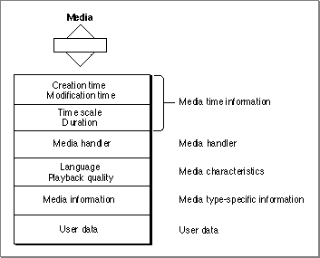

Media Characteristics
As is the case with movies and tracks, a QuickTime media is represented as a private data structure. Your application never works with individual fields in that data structure. Rather, the Movie Toolbox provides functions that allow you to work with a media's characteristics. Figure 2-11 shows the characteristics of a QuickTime media.Figure 2-11 Media characteristics

Each QuickTime media has some state information, including a creation time and a modification time. These times are expressed in standard Macintosh time format, representing the number of seconds since midnight, January 1, 1904. The creation time indicates when the media was created. The modification time indicates when the media was last modified and saved.
Each media has its own time coordinate system, which is defined by its time scale and duration. Any time values that relate to the media must be defined in terms of this time scale and must be between 0 and the media's duration.
A media contains information that identifies its language and playback quality. These values are used when selecting from among the tracks in an alternate group.
The media specifies a media handler, which is responsible for the details of loading, storing, and playing media data. The media handler can store state information in the media. This information is referred to as media information. The media information identifies where the media's data is stored and how to interpret that data. Typically, this data is stored in a data reference, which identifies the file that contains the data and the type of data that is stored in the file.
The Movie Toolbox allows your application to store its own user data along with a media. You define the format and content of these data objects. The Movie Toolbox provides functions that allow you to set and retrieve a media's user data. This data is saved with the media when you save the movie.